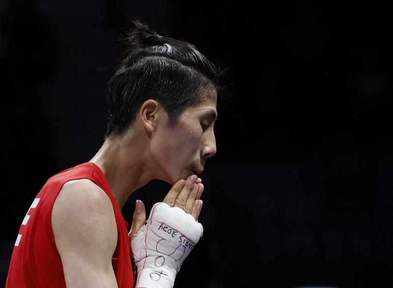

台湾女子拳击好手林郁婷卷入性别争议，今天在巴黎奥运8强赛后打破沉默出面受访，感谢全台湾的支持和加油。教练曾自强心疼爱徒无端陷入风波，也鼓励她出来「直球对决」。
拿下去年杭州亚运金牌的林郁婷，在比赛开打前夕，遭到已经被国际奥会（IOC）开除的国际拳击总会（IBA）连续声明抹黑，质疑她的性别争议。
林郁婷在首战16强获胜后选择避而不谈，但今天决定打破沉默，哽咽留着泪说：「感谢全台湾的支持和加油，我会带着这股气势一路赢下去。」
曾自强在接受中央社访问时表示：「其实我们之间的沟通一直很顺畅，对于最近的争议也都有话直说，我一直鼓励她出面直球对决，我们又没有做错事，而且国际奥会主席都出面力挺，不需要再躲避什么了。」
曾自强说：「相信今天林郁婷自己亲口说出一些话之后，心中的大石头一定也放下来，接下来会更专注在比赛上，不会东想西想。」
接下来，林郁婷在奥运4强的对手将是土耳其的卡拉曼（Esra Yıldız Kahraman）。曾自强表示，这名选手过去没有打过，也比较少情搜的数据，「但我相信只要林郁婷正常地好好发挥，绝对会拿金牌」。
巴黎奥运热话题除了金银还有钻石 奥运场上的求婚名场面真不少「胯下一包」卡到杆子 法选手撑竿跳失败却暴红再战2028？拜尔丝：永不说不 但到时我真的老了金牌内战成饭圈大战？孙颖莎满场欢呼 陈梦收获嘘声4日赛程 网球男单王者诞生、樊振东力拚桌球男单金牌

身陷性别争议的台湾拳击选手林郁婷。(路透)
台湾女子拳击好手林郁婷卷入性别争议，今天在巴黎奥运8强赛后打破沉默出面受访，感谢全台湾的支持和加油。教练曾自强心疼爱徒无端陷入风波，也鼓励她出来「直球对决」。
拿下去年杭州亚运金牌的林郁婷，在比赛开打前夕，遭到已经被国际奥会（IOC）开除的国际拳击总会（IBA）连续声明抹黑，质疑她的性别争议。
林郁婷在首战16强获胜后选择避而不谈，但今天决定打破沉默，哽咽留着泪说：「感谢全台湾的支持和加油，我会带着这股气势一路赢下去。」
曾自强在接受中央社访问时表示：「其实我们之间的沟通一直很顺畅，对于最近的争议也都有话直说，我一直鼓励她出面直球对决，我们又没有做错事，而且国际奥会主席都出面力挺，不需要再躲避什么了。」
曾自强说：「相信今天林郁婷自己亲口说出一些话之后，心中的大石头一定也放下来，接下来会更专注在比赛上，不会东想西想。」
接下来，林郁婷在奥运4强的对手将是土耳其的卡拉曼（Esra Yıldız Kahraman）。曾自强表示，这名选手过去没有打过，也比较少情搜的数据，「但我相信只要林郁婷正常地好好发挥，绝对会拿金牌」。
巴黎奥运热话题
- 除了金银还有钻石 奥运场上的求婚名场面真不少
- 「胯下一包」卡到杆子 法选手撑竿跳失败却暴红
- 再战2028？拜尔丝：永不说不 但到时我真的老了
- 金牌内战成饭圈大战？孙颖莎满场欢呼 陈梦收获嘘声
- 4日赛程 网球男单王者诞生、樊振东力拚桌球男单金牌